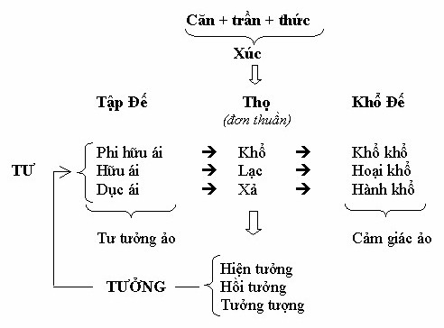
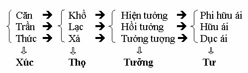
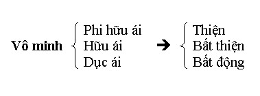
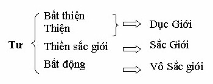
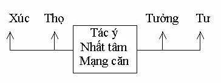

|
Thực Tại Hiện Tiền Viên Minh |
|
BuddhaSasana Home Page |
Vietnamese, with Unicode Times font |
|
|
Thực Tại Hiện Tiền Viên Minh |
|
[04] TẬP ĐẾ - KHỔ ĐẾ(Nói tiếp về sự vận hành của căn
+ trần + thức 20-11-1993 XÚC VÀ THỌ: Căn + trần + thức là nói chung cho lục căn + lục trần + lục thức. Khi ba cái này tương tác với nhau, tức là xúc, thì sẽ phát sinh khổ thọ, lạc thọ và xả thọ. Phần này chúng ta đã nói nhiều trong đoạn trước, vậy chúng ta tóm tắt nó như sau:
TƯỞNG: Khổ, lạc, xả sẽ đưa đến khâu thứ ba là tưởng: hiện tưởng, hồi tưởng và tưởng tượng. * Hiện Tưởng: Tức là nhận biết căn, trần, thức (xúc) và khổ, lạc, xả (thọ) một cách trung thực (trên bình diện liên đới, chứ không toàn diện). Thực đây là thực ngay khi nó xuất hiện thôi. Chỉ thực khi pháp là pháp đang là. Mà đang là thì đâu có gì dừng lại. Ta vừa mở miệng hỏi pháp là gì thì nó đã qua mất rồi, phải không? Ví dụ véo một cái thì mình đau. Cái đang đau đó nếu mình nhận thức đúng, nghĩa là mình không chồng lên nhận thức đó một ảo giác, một hồi tưởng trong quá khứ, hoặc một tưởng tượng trong tương lai, thì cái đang là được nhận biết bằng tri giác hiện tưởng. Vậy hiện tưởng là nhận biết đối tượng đúng như gốc độ tương đối, mà nó trình diện. Nếu được trí tuệ soi sáng thì tưởng nó phản ánh đối tượng một cách trung thực và toàn diện. * Hồi Tưởng: Là chồng lên nhận thức hiện tại một cái tướng của quá khứ, làm cho phức tạp thêm đối tượng hiện tại. Ví dụ cái vỗ vai của anh bạn thân và của người thù mà tôi ví dụ hôm trước. Cùng một cảm thọ mà tưởng nhận định khác nhau, đó là do hồi tưởng xen vào, làm sai lệch cái cảm thọ thực, khách quan. * Tưởng Tượng: Là dự phóng hình ảnh của đối tượng ở tương lai. Thực ra hình ảnh được tưởng tượng ra trong tương lai cũng chỉ được ráp nối bằng những ý niệm quá khứ do hồi tưởng cung cấp TƯỞNG VÀ TƯ: Tùy theo sự trung thực hay bóp méo của các tưởng mà nó sẽ sinh ra: Dục ái, hữu ái, phi hữu ái → Tư Trong Duy Thức và Vi Diệu Pháp gọi nó là tư, hay để dễ hiểu ta gọi nó là tư tác. Hồi tưởng và tưởng tượng nếu được trí tuệ hướng dẫn lại trở thành cái dụng của đạo. Nhờ nó mà người giác ngộ không chỉ thấy pháp trên bề mặt tiếp xúc qua hiện tượng, mà còn các thuộc tính phong phú hơn nhiều. Ở đây chúng ta chỉ nói phần sai của 3 tưởng khiến đưa đến tạo tác - Hiện tưởng: cục bộ, hạn hẹp trên bề mặt. Vậy ở đây chúng ta có: - Hiện tưởng, hồi tưởng và tưởng tượng → Tưởng. Hai cái này gộp lại thành tư tưởng. Vậy tư tưởng sai lầm chính là đầu mối bóp méo sự thật. Do tư tưởng chủ quan mà mình đã biến sự vận hành khách quan - khách quan nghĩa là chưa bị chủ quan bóp méo - làm tăng hay giảm cảm thọ hiện thực (chúng ta đang nói tưởng đối với thọ). Chúng ta tạm đặt tên cho tư tưởng (tư + tưởng) sai lầm, chủ quan là ảo tưởng hay vọng niệm để dễ trình bày vấn đề. Khi ảo tưởng chiếu lên các cảm thọ đơn thuần (khổ, lạc, xả) thì nó sinh ra khổ khổ, hoại khổ và hành khổ. Cho nên khổ khổ, hoại khổ, hành khổ chỉ là ảo giác. Ta có thể tóm tắt chúng như sau:  Chính khổ, lạc, xả mới là cảm thọ đơn thuần tự nhiên, còn cảm thọ nơi khổ khổ, hoại khổ, hành khổ, là mình đã bóp méo qua sự tạo tác của tư và tưởng rồi. Nhưng nếu các tưởng phản ánh trung thực và tư tác đi đôi với bát nhã (paññā) thì vấn đề lại hoàn toàn khác (điều này chúng ta sẽ nói sau). Khổ, lạc, xả dẫu là cảm thọ đơn thuần, tự nhiên và khách quan - cảm thọ đúng - nhưng ở nơi mỗi người vẫn mỗi khác. Vì sao? Ví dụ một người có tu tập trong quá khứ, có hành thiện trong quá khứ thì sinh ra ít bệnh hoạn, mạnh khỏe, hoàn cảnh nhiều may mắn, do đó trong đời sống hiện tại họ có nhiều cảm thọ lạc hơn cảm thọ khổ. Ngược lại một người không tu tập lại làm nhiều việc bất thiện trong quá khứ thì sinh ra lại bệnh hoạn, tàn tật và hoàn cảnh nhiều bất hạnh, do đó trong đời sống hiện tại, anh ta cảm thọ khổ nhiều hơn cảm thọ lạc. Tất nhiên những thọ khổ, lạc ởù hai trường hợp trên đã gieo mầm sẵn từ quá khứ rồi (nhân quá khứ và quả hiện tại), cho nên bây giờ chỉ gặt quả, gọi là dị thục, và không tạo nhân gọi là vô nhân. Có điều cần lưu ý ở đây là: nếu có một người đã làm nhiều việc bất thiện trong quá khứ, thì đời này bị nhiều khổ thọ. Nhưng trong đời này, vị ấy tu tập, thấy được pháp, tâm hồn hoàn toàn giải thoát, thì cái khổ (khổ thọ) vị ấy phải nhận chịu, lại hoàn toàn không ảnh hưởng gì đến giải thoát của vị ấy cả. Trong kinh có kể khá nhiều chuyện những vị Tỳ kheo đạt đạo trong tình trạng hết sức đau khổ. Những vị ấy đang bệnh chịu không nổi, nhưng nhờ thiền quán, các vị ấy thấy ngay cái bệnh khổ ấy, thấy thực tướng cái khổ ấy, nên vị ấy đạt đạo. Khổ hoàn toàn không ảnh hưởng. Cho nên, vấn đề là ta có thấy cái khổ, cái lạc đúng thực tướng của nó không, chứ đừng có ham muốn tìm lạc bỏ khổ mà rơi vào lầm lạc. Nếu có bỏ khổ thì phải bỏ cái khổ ảo giác do ảo tưởng sản sinh - tức là khổ khổ, hoại khổ, hành khổ - chứ không phải bỏ cái khổ trong "khổ, lạc, xả" bình thường. Xin nhớ cho điều ấy, rất quan trọng. (Lần sau chúng ta sẽ nói về sự thoát khổ ấy là thoát như thế nào). Bây giờ chúng ta thử duyệt lại toàn bộ diễn biến để xem đâu mới là khâu cần phải giải quyết.  Xúc - thọ và tưởng thực ra đều thuộc về vô nhân dị thục, chỉ là kết quả thụ động, nên không phải là khâu để giải quyết. Bậc trí chỉ giải quyết nhân chứ không giải quyết quả. Xúc - thọ thì dễ hiểu, nhưng vì sao tưởng lại cũng không phải là vấn đề giải quyết, chính nó cùng với tư (= tư tưởng) trở thành nguyên nhân của sự tạo tác kia mà? Thực ra, nói là tư tưởng nhưng trong đó tư đóng vai tạo tác, còn tưởng chỉ cung cấp dữ kiện thôi. Ví dụ cung cấp cái dao cho người sử dụng người đó dùng dao để giết người thì người giết có tội chứ cái dao không có tội. Tưởng chỉ đóng vai tiếp nhận, suy đạc, xác định đối tượng chứ không phán đoán và quyết định thái độ phản ứng trên đối tượng như tư. Tưởng có thể đúng hoặc sai nhưng chưa phải là thiện ác. Thiện ác thuộc về tư. Tưởng là tấm ảnh thu được đối tượng, nếu tưởng tốt thì ảnh rõ, nếu tưởng xấu thì ảnh mờ. Còn tư mới là người ngồi phê phán, chọn lọc, nói xấu, nói đẹp, sinh ưa, sinh ghét v.v... Dầu tưởng sai lầm hay mờ ảo cũng không quyết định thái độ của tư. Nhưng vì tư bị vô minh ái dục chi phối nên không phân biệt được đúng hay sai mà thành ra vọng động tạo tác. Nếu tư được trí tuệ hướng dẫn nó sẽ biết tưởng đúng hay sai ngay nên nó vẫn không vọng động tạo tác. Trong thành phần của một cái bánh có bột, có đường, có nước... chẳng hạn. Nhưng người làm bánh tùy theo ý thích của mình tạo ra hình chim, hình hoa, hình vuông, hình tròn... hoặc ngon, hoặc dở... khác nhau. Tại sao cũng bột, cũng đường, cũng nước... mà cuối cùng bánh lại khác nhau? Đương nhiên khác nhau là do nơi sở thích và trình độ hiểu biết của mỗi người, nhưng thành phần bên trong cũng là đường, là nước, là bột mà thôi. Cũng vậy, ở nơi Phật, ở nơi chúng sinh, cơ cấu vận hành đều giống nhau nhưng Phật khác chúng sinh vì do trí tuệ và sở hành không giống nhau. Cũng xúc, thọ, tưởng mà Phật Niết Bàn còn chúng sinh thì luân hồi sinh tử. Vì tư của Phật là Minh Hạnh Túc, còn tư của chúng sinh là vô minh ái dục. Tư giống như thủ tướng của "nội các hành", nếu được cố vấn bởi vô minh ái dục thì chủ yếu là tạo nghiệp bất thiện, nếu được cố vấn bởi trí tuệ thì tạo nghiệp thiện, bất động hoặc siêu thế. Riêng đối với chúng sinh thì tư quyết định cõi giới: ác đạo hay thiện đạo, hoặc dục giới, sắc giới hay vô sắc giới. Tư tạo nhân để rồi tạo quả nơi xúc - thọ - tưởng. Vậy tư mới là khâu nhân cần được giải quyết, còn xúc - thọ - tưởng chỉ là quả, không nên trước ý giải quyết mà tạo tác thêm luân hồi sinh tử. Tu mà điều chỉnh tư là đúng, còn tu hành mà lăng xăng điều chỉnh xúc - thọ - tưởng là hoàn toàn sai. Vì điều chỉnh tư tức là điều chỉnh xúc - thọ - tưởng rồi. Người tu hành cần phải hiểu rõ điều đó. Có người hỏi: - Nếu vậy khi căn tiếp xúc với trần, ta chỉ kham nhẫn với cảm thọ, và chỉ biết (tưởng) vậy thôi, chứ đến tư ta đừng khởi tâm, thì như vậy là đã giải quyết vấn đề được chưa? - Điều này chúng ta đã nói một lần rồi, nhưng lần này có lẽ chúng ta đã thấy sâu hơn do đã thấy được mấu chốt của tư. Để dễ hiểu tôi xin lấy một ví dụ: Ví dụ con chó, nó chỉ phản ứng theo bản năng sinh lý hoặc cảm tính như đau nó chỉ kêu ẳng ẳng vậy thôi. Nó không suy nghĩ tính toán đầy lý tính và ý chí như con người. Như vậy tư của nó rất đơn giản muội lược. Thường là ở dưới dạng tâm si. Như vậy chẳng lẽ nó hơn con người sao? Thực ra, tâm chúng ta trừ phi ở trạng thái thụ động như lúc ngủ yên chẳng hạn, còn thì luôn luôn có thái độ này hoặc thái độ khác, nghĩa là có khởi tâm, chứ không thể nào tâm không khởi được. Vậy vấn đề không phải là tâm đừng khởi, mà khởi sao cho đúng. Cho nên Ngài Huệ Năng mới bảo: "đối cảnh tâm sổ khổ". Còn Đức Phật khi có người hỏi: "Bạch Đức Thế Tôn, nếu tất cả tâm không khởi thì sẽ không có tất cả khổ". Đức Phật bảo: "Chớ có nói vậy, chỉ không nên khởi tâm bất thiện mà thôi". Nếu không khởi tâm thì làm sao có chuyện hạnh nguyện Bồ Tát, có thuyết pháp độ sanh? Vậy khởi là phải có. Khởi mà đúng đắn, đúng pháp, đúng với sự thật thì cái khởi ấy được gọi là chánh tư duy, chánh tinh tấn, chánh niệm, chánh định v.v... Đừng tưởng định là không khởi. Định cũng là một dạng khởi tâm. Nó khởi trạng thái định nên gọi là khởi định. Cái tâm là vậy, khi nó yên là yên, khi nó khởi là khởi, đó là định luật của nó. Khởi hay không khởi đều có tốt, có xấu chứ không phải không khởi là tốt mà khởi là xấu. Cũng như cái thân hình đây không phải nằm là tốt mà đứng dậy là xấu. Không phải vậy, tốt xấu... thật ra tùy theo cái dụng của nó. Thí dụ: đúng cái lúc mà mình cần phải khởi tâm thì mình lại không, vậy là mình tầm bậy rồi. Có mấy chục người đang đói đến xin ăn, mình có gạo, nhưng mình lại không khởi tâm gì cả. Khi ấy có đúng không? Mình phải khởi tâm lo đi lấy gạo nấu cơm cho người ta ăn chứ, phải không? Mình phải biết lúc nào nên khởi, lúc nào không nên khởi, mỗi cái tác dụng gì, nó có lợi ích gì, hay có tác hại nào. Vì cái thấy các pháp là quan trọng, còn pháp thì không xấu, không tốt, nhưng tùy mình mà cái nào cũng có tốt có xấu, đến cả Niết Bàn mà mình cũng biến nó thành xấu thành tốt được. Quý vị nghe có lạ không? Niết Bàn thì không tốt không xấu rồi, nhưng quý vị chấp Niết Bàn là bản ngã thì chết rồi! Chẳng thà không biết Niết Bàn chi cả, đang đau khổ, nhưng thấy đau khổ chỉ là một sự vận hành như thực thì lại giải thoát. Còn mình đạt được Niết Bàn an ổn hoàn toàn, nhưng mà mình chấp nó thì thành xấu phải không? Điều n ày không phải tôi bày đặt ra đâu. Trong kinh Mūlapariyāyasuttam, Majjhimanikāya nguyên thủy, Đức Phật dạy: "Này các tỷ kheo, Như Lai Bậc A-La-Hán, Chánh Đẳng Giác, biết rõ (abhijānāti) Niết Bàn là Niết Bàn. Với thắng trí (abhiññāya) Niết Bàn là Niết Bàn, Như Lai không nghĩ tưởng (maññati: tưởng tượng) đến Niết Bàn, không nghĩ tưởng trên Niết Bàn, không nghĩ tưởng từ Niết Bàn, không nghĩ tưởng Niết Bàn là (của) ta, không quá vui thích (abhinandati) Niết Bàn. Vì sao vậy? Vì biết rằng vui thích (nandā) là căn bản của khổ, là hữu, là sanh tử của chúng sinh".Trở lại vấn đề, bây giờ chúng ta đi sâu thêm vào tiến trình để thấy rõ dần dần từng khâu vận hành của nó. Ở đây không phải dùng một quan điểm để giải thích, không phải dùng Duy Thức hoặc Vi Diệu Pháp, kinh điển gì đó để làm việc ấy. Chúng ta cứ chiêm nghiệm tiến trình diễn tiến của chính nó như thế nào trước, rồi lấy kinh điển ra mà minh họa sau như là chứng lý mà người xưa đã thấy rồi. Căn + trần + thức = Xúc Xúc tức là sự giao tiếp, tương giao giữa 3 yếu tố căn - trần - thức. Hôm tôi dạy môn Duy Thức - Vi Diệu Pháp tỷ giảo, có người Phật tử hỏi rằng: - Có phải căn tiếp xúc với trần sinh ra thức không? Ví dụ nhãn căn tiếp xúc với sắc trần sinh ra nhãn thức phải không? Nếu vậy thầy cho con được hỏi: căn là một yếu tố vật chất, trần cũng là vật chất, thì làm sao cả hai cái vật chất tiếp xúc với nhau lại sinh ra thức được? Câu hỏi thật hay, phải không? Căn, trần, thức tác dụng với nhau gọi là tương tác, giao tiếp với nhau gọi là tương giao mà thành xúc. Trong 3 yếu tố thiếu một thì không thành xúc được, chứ không phải hai cái này sinh cái kia. Lát nữa mình sẽ thấy điều đó rõ hơn.
Xúc - thọ - tưởng - tư là nội dung tất yếu, cơ bản của một tiến trình tâm (tôi tạm mượn danh từ của Duy Thức học và Vi Diệu Pháp). Xin lưu ý rằng thức ở trong căn - trần - thức không phải là nhận thức, nó chỉ mới tiếp nhận đối tượng mà thôi. Tưởng mới là biết, mới là nhận thức ở mức độ tri giác. Tưởng đó biết là sắc, tưởng đó biết là khổ v.v... còn nhãn thức, nhĩ thức... thân thức chỉ như máy ảnh mà mình vừa bấm một cái là nó ghi nhận hình liền, còn đen trắng, to nhỏ, vuông tròn chi đó... nghĩa là nhận biết nó là hình gì, sắc gì thì là chức năng của tưởng. Vậy khi tiếp xúc thì thọ liền phát sanh, đấy là điều tất yếu xảy ra. Khổ, lạc, xả là ở cảm giác tất yếu. Khi mà mình dường như không có cảm giác gì cả thì nó là xả thọ, chứ không phải là không thọ gì cả như nhiều người lầm tưởng. Dễ chịu là lạc thọ, khó chịu là khổ thọ. Đến khi ấy thì tưởng mới nhận biết thọ này. Khi mắt, tai, mũi, lưỡi, thân, ý tiếp xúc với sắc, thanh, hương, vị, xúc, pháp thì sau thọ khởi lên, tưởng hoạt động như sau: Tưởng ↓ Diễn ra tiến trình phân tích
để nắm bắt biệt tướng ↓ Diễn ra tiến trình tổng hợp
để nắm bắt tổng tướng ↓ Khởi khái niệm hình sắc, tướng trạng v.v... ↓ Khởi khái niệm danh ngôn Như chúng ta đã nói, tưởng có thể đúng có thể sai, có thể rõ, có thể mờ, nhưng nó vẫn là vô nhân. Đến tư mới có vấn đề phản ứng, phê phán, tạo tác, trừ phi tư có Thánh tuệ soi sáng nó mới không còn tạo tác. Nếu ngang tưởng mà kiểm soát được thì vẫn chưa có tạo tác gì. Nhưng đến tư, đến phi hữu ái, hữu ái và dục ái là bắt đầu có vấn đề, có tạo tác, có nghiệp. Phi hữu ái, hữu ái, dục ái có thể thiện, có thể bất thiện, có thể bất động, nó luôn luôn đi kèm với vô minh:  Thiện là gì? Thiện xuất phát từ các yếu tố tâm (tâm sở) trong lành. Khi tư có chủ ý tốt đẹp gọi là thiện. Khi tư có chủ ý xấu xa gọi là bất thiện. Còn khi tư có chủ ý trên các tâm sở thiền chi thì gọi là bất động. Dầu thiện, dầu bất thiện, dầu bất động thì cũng đều tạo tác. Thiền định (bất động) cũng là một cách bóp méo thực tại, giống như mang kính màu thì thấy cảnh sắc đẹp hơn. Thiền định chỉ có tác dụng lợi ích trong giới hạn nào đó, chẳng hạn chế ngự 5 yếu tố ngăn che tâm (triền cái). Trừ phi Thánh định mới là duy tác, mới là Niết Bàn, mới là hiện tại lạc trú của các bậc Thánh. Phàm định chỉ là phương tiện chứ không phải là mục đích tối hậu. Phàm định không thể đưa đến giải thoát hoàn toàn. Trong phàm định cũng có giải thoát, nhưng chỉ giải thoát ra khỏi dục giới để an trú vào các tầng thiền sắc giới, hoặc giải thoát sắc giới để an trú ở các rầng thiền vô sắc giới. Nhưng những giải thoát này vẫn còn nằm trong giới hạn của tưởng, do tưởng sinh. Trở lại tư, trừ phi tư được hướng dẫn bởi Thánh Tuệ, nó chỉ tạo tác trong vòng tam giới: dục giới, sắc giới và vô sắc giới. Dục giới, sắc giới và vô sắc giới lại xuất phát từ dục ái, sắc ái và vô sắc ái, cấp cao của dục ái, hữu ái và phi hữu ái mà thôi. Từ dục ái (cấp thấp) mình khởi tâm tu để đạt những hạnh phúc cõi trời dục giới (6 cảnh trời) gọi là dục ái (cấp cao). Từ hữu ái (cấp thấp) mình muốn tu thiền định để đắc các tầng thiền ở cõi trời sắc giới (4 tầng thiền) gọi là sắc ái (cao cấp). Từ phi hữu ái (cấp thấp) mình muốn tu thiền định với các đối tượng vô sắc để đạt cõi trời vô sắc giới gọi là vô sắc ái (cấp cao). Tất cả những cái đó đều là tư, là tạo nghiệp. Đức Phật Ngài dạy: "Cetan'āham bhikkhave kammam
vadāmi". Nhưng "ba cõi bất an ví như nhà lửa", nên hạnh phúc thiên lạc ở các tầng trời dục giới, sắc giới, vô sắc giới vẫn bất an, nghĩa là không thoát khỏi khổ đế (như nhà lửa).  Tư Thiện và Tư Thiền Sắc giới còn được gọi chung là Phúc hành. * Dục giới gồm các cõi: Bất thiện: địa ngục, ngạ quỷ, súc sanh, a-tu-la. Thiện + bất thiện: cõi người. Thiện: các cõi trời dục giới: Tứ đại thiên vương, Đao lợi, Dạ ma, Đâu xuất, Hóa lạc, Tha hóa tự tại. * Sắc giới gồm các cõi: - Sơ thiền: Phạm chúng thiên. - Nhị thiền: Thiếu quang thiên. - Tam thiền:
- Tứ thiền: Quảng quả thiên. [*] Riêng Phước sanh thiên chia làm 5 cõi: Vô phiền thiên, Vô nhiệt thiên, Thiện hiện thiên, Thiện kiến thiên và Sắc cứu cánh thiên. (nơi đây chỉ có bậc Anahàm (đã đắc tứ thiền hay ngũ thiền nếu phân chia theo Vi Diệu Pháp) tục sinh và sẽ chứng Alahán quả tại đây). * Vô sắc giới gồm các cõi: - Không vô biên xứ thiên. Sở dĩ kể ra như thế để chúng ta thấy rằng tư có thể tạo tác nghiệp trong tam giới đa diện như vậy. Nhưng giải thoát, giác ngộ là phá hết tạo nghiệp, phá hết tư tác trong tam giới, vì tam giới vẫn còn khổ đế. Dù ở các cõi trời có hỷ, lạc, định, xả nhưng vẫn là khổ đế. Chúng ta tu hành là để giải thoát khổ đế chứ không phải là để được hỷ, lạc, định, xả phải không? Làm thiện để mà được lên cõi trời dục giới, thiền định để mà được lên trời sắc giới và vô sắc giới thì khổ đế vẫn cứ còn y nguyên, vẫn do dục ái, hữu ái và phi hữu ái tạo ra, mà nguồn gốc của nó vẫn là vô minh. Đúng vậy không? Ở đây ta có thể rút ra một điểm như thế này: khổ đế không phải chỉ là khổ thọ mà phần lớn khổ đế lại là lạc thọ hay xả thọ. Tuy vậy nó sẽ di hại lên trên thân biến thành khổ thọ. BA YẾU TỐ PHỐI HỢP Cùng xúc, thọ, tưởng, tư còn 3 yếu tố đi kèm đó là tác ý, nhất tâm và mạng căn (theo Vi Diệu Pháp). Theo Duy Thức thì chỉ có thêm tác ý mà thôi. Xúc, thọ, tưởng, tư và tác ý, Duy Thức gọi là 5 biến hành tâm sở. Vi Diệu Pháp thêm nhất tâm và mạng căn nên có 7 biến hành tâm sở. Gọi là biến hành tâm sở vì chúng có mặt trong tất cả các tâm, tâm phàm tâm Thánh gì chúng cũng có mặt, nhưng nội dung có khác nhau:  - Tác ý phải có mặt thì xúc mới hiện hành. Nếu tác ý không có mặt thì mắt với sắc, tai với tiếng, mũi với mùi, lưỡi với vị, thân với vật thể, không tương giao tương tác được, nghĩa là không thành xúc. - Tác ý phải có mặt thì thọ mới hiện hành. Nếu tác ý không có mặt thì khổ, lạc, xả có cũng như không, giống như hét vào tai hoặc chích vào da của người hôn mê vậy. - Tác ý phải có mặt thì tưởng mới hình thành, nếu không thì tri giác không thể hoạt động. Giống như con mắt của người lơ đễnh vẫn thu hình ở điểm vàng nhưng không biết đó hình gì. Âm thanh vẫn làm rung màng nhĩ nhưng người chết không biết đó là tiếng gì. - Tác ý phải có mặt thì tư mới hình thành. Nếu không sẽ như thuyền có máy mà không có bánh lái, nó sẽ chạy lung tung bất định. Giống như người bị mất trí không thể kết tội hành động của họ được. Tác ý luôn luôn có mặt và hợp tác chặt chẽ với xúc, thọ, tưởng, tư. Vậy tác ý là gì? Tác ý (manasikāra) là công tác lái ý hướng của tâm trên đối tượng. Nó quyết định khuynh hướng đúng sai của tâm về đối tượng. - Nếu tác ý đúng thì xúc, thọ, tưởng đúng và tư là thiện, bất động hoặc siêu thế. - Nếu tác ý sai thì xúc, thọ, tưởng bị bóp méo và tư sẽ là bất thiện. Vì vậy có 2 loại tác ý: - Như lý tác ý (Yoniso manasikāra): Yoniso có nghĩa là như thế nào thì nó như vậy, như thị. Như lý tác ý là tâm hướng đúng đắn, tâm hướng như thực. - Phi như lý tác ý (Ayoniso manasikāra): tác ý không đúng, tâm hướng sai, tâm hướng lệch lạc, không như thực. Ví dụ: mắt thấy sợi dây, do không tác ý đúng đắn, tâm hướng sai lệch nên tưởng là con rắn. Thấy người phụ nữ tưởng mẹ mình, tưởng là chị mình, tưởng là bạn mình v.v... thì 3 trạng thái tâm hướng hoàn toàn khác nhau. Vậy tác ý của mình như thế nào đối với đối tượng nó rất quan trọng. Nó lái cả xúc, thọ tưởng, tư. Còn nhất tâm, mạng căn vì sao phải có mặt? Tiến trình xúc, thọ tưởng, tư cần phải đồng nhất từ đầu đến cuối nên cần phải có nhất tâm. Đồng thời mỗi tiến trình phải có một thời gian tồn tại riêng, nó xảy ra trong một số sát-na nhất định nên cần phải có mạng căn. Nếu không có 2 tâm sở này thì 5 biến hành tâm sở kia (xúc, thọ, tưởng, tư, tác ý) sẽ tiến hành không đồng nhất và không tồn tại trong một thời gian cần thiết để xử lý đối tượng. Vì vậy 7 biến hành tâm sở đúng hơn là 5. Thế là chúng ta đã nói về sự vận hành của 18 giới. Những dữ kiện căn bản ở trong bài kinh Bát Nhã, đồng thời chúng ta biết rất rõ đâu là khổ đâu là nguyên nhân của khổ. Trước khi chúng ta nói đến một sự kiện liên hệ, cũng rất quan trọng, đấy là ngũ uẩn. Trong kinh Bát Nhã, quý vị có ai hỏi điều gì không? Có người hỏi: - Trong phần trước có nói xúc, thọ, tưởng chưa có vấn đề gì cả, đến tư mới có vấn đề. Nhưng ở đây, tác ý có từ nơi xúc, thọ, tưởng và tác ý sai lầm thì xúc, thọ, tưởng cũng sai, làm sao không có vấn đề được? - Xin trả lời. Trước đây tôi có nói chỉ mới xúc, thọ, tưởng thì chưa có vấn đề gì. Tuy nó có đúng sai nhưng vẫn chưa tạo tác. Mãi đến tư mới tạo tác nghiệp trong tam giới (tam giới duy tâm chính là nói tư vậy). - Vậy tại sao tác ý lại đóng vai trò quan trọng đối với xúc, thọ, tưởng, tư? - Đúng là tác ý lái xúc, thọ, tưởng, tư. Nếu đến tư mà bật đèn trí tuệ lên nó chỉ mới đúng sai chưa tạo ra thiện ác, chưa tạo nghiệp. Tác ý ví như bánh lái, còn tư ví như máy tàu. Bánh lái dùng bẻ qua bẻ lại mà máy chưa nổ, chưa départ thì cũng chưa gây tác hại gì, có phải không? Có người hỏi: - Trong những biến hành tâm sở, có tác ý. Con tự đặt câu hỏi: Ai tác ý? Có phải cái nhất tâm, mạng căn không? Tác ý không phải là cái phát khởi lung tung mà nó có một quá trình nhất quán. Tự dưng trong đầu óc con cứ nẩy ra câu hỏi như vậy, không biết ở nơi này nó có thấp thoáng cái ngã không? Không biết cái ngã này nó nằm ở đâu đây? Tác ý này không phải tự nhiên mà xuất hiện, nó do đâu, chẳng lẽ tác ý này không có chủ từ? - Vâng, tôi xin trả lời. Ở đây ta phải xác định được ý nghĩa của tâm sở rồi sẽ thấy. Thường thường chúng ta tưởng tâm sở là những yếu tố có sẵn, giống như nói là đường, là bột, là oxy, là hydro v.v... Theo Vi Diệu Pháp thì tâm sở không phải là cái có sẵn. Khi nó hình thành một số tâm sở như thế này... thì nó là thiện tâm. Khi nó hình thành một số tâm sở như thế kia... tâm trở thành bất thiện. Hình thành tâm sở thế nọ... thì nó là tâm bất động. Tuy nhiên các tâm sở này nó mang tính chất "tác dụng" hơn là một thực thể. Ví dụ cái tay có tác dụng đánh, cái đánh đó chỉ là tác dụng chứ không phải có một thực thể đánh. Khi mình đánh thì cái đánh xuất hiện, khi mình không đánh thì cái đánh đó không xuất hiện. Vậy, không phải tâm sở này phát sanh tâm sở kia, mà thật ra, nó chính là điều kiện phát sanh, có cái này thì có cái kia, như có tư vì có tưởng, có tưởng vì có thọ v.v... Những điều kiện phát sanh này chính là sự vận hành tạo tác. Ví dụ mình nói H2 cộng với 02 là thành nước. H2 và 02 ví như tâm sở. Nước ví như tâm. Đây là tạm ví dụ thôi, chứ nước, hydro, oxy là những chất cụ thể, là những yếu tố nhất định, còn tâm thì khác. Tâm sân ở cường độ này khác với tâm sân ở cường độ kia, và như vậy thì xúc, thọ, tưởng, tư, tác ý, nhất tâm, mạng căn đều khác nhau. Các tâm sở là sự vận hành, là những tác dụng không cố định. Nghĩa là có tương duyên thì nó khởi lên, có tác dụng thì nó khởi lên, không tác dụng thì nó không khởi lên, do đó không phải do ai sinh ra cả. Mưa do ai phát sinh ra? Hơi nước bốc lên, gặp lạnh thành mưa, mưa rơi xuống gặp nắng lại bốc hơi... chứ không do ai cả, phải thế không? Đủ điều kiện như vậy thì nó phát sanh như vậy. Tuy nhiên, anh cũng nói đúng. Khi một người dựng cho mình một bản ngã, lúc bây giờ, tất cả tâm sở này họ xem là ngã sở của họ, và chính họ đã sử dụng ngã sở ấy. Nhưng khi vô ngã thực sự thì nó vẫn tác dụng như thường, mà khi đó không phải là ngã, nó chỉ là một dòng biến chuyển của pháp mà thôi, chỉ là sự vận hành mà thôi. -ooOoo- |
Chân thành cám ơn anh Lê Trung Thành đã gửi tặng bản vi tính (Bình Anson, tháng 1-2004)
[Trở
về trang Thư Mục]
last updated:
08-01-2004